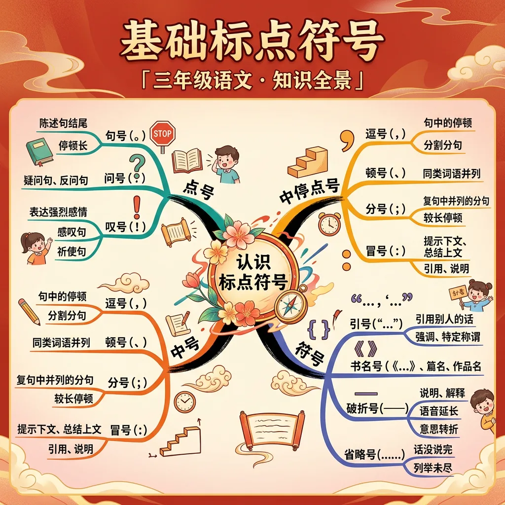
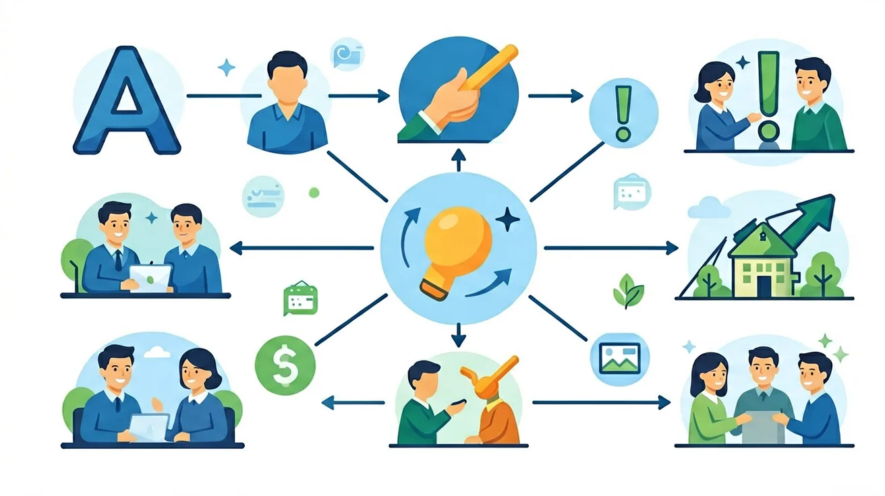

🌍 And（已知）：我们已经有了一定的基础知识
⚡ But（问题）：但还有一个重要概念需要深入理解
💡 Therefore（新知）：因此通过本节课的学习，我们将掌握新知识并能灵活运用
学习前先测一测，了解你的起点 ✨
1. 你在日常阅读中遇到不理解的词语时，通常会？
2. 好的写作最重要的是？
⭐ 答对一道题 得一颗星 ⭐

学习要用心，理解比死记更重要；多问"为什么"，把知识连成网
和前测对比一下，看看你进步了多少！ 🚀
1. 学完本节课，你对这个语文知识点的掌握程度是？
2. 你能用今天学的知识写一个句子或段落吗？
💡 常见错误往往就在细节中，仔细检查每一步！
和 AI 对话，深化对本节课知识点的理解
💬 参考提示词（复制给 AI 使用）：
✨ 可以用上面的提示词与 AI 展开深度对话，AI 会根据你的回答给出个性化指导。
回忆：今天学了哪些关键词和规则？试着说出来。
用自己的话解释今天学的核心概念，不看书能说清楚吗？
用今天的知识解决一个实际问题，或写一个新例子。
把今天的知识与已有知识联系起来：有什么共同点？有什么区别？能不能自己创造一道新题？
1. 你知道句号在句子中起到什么作用吗？2. 你能举例说明逗号的使用场景吗？3. 你知道问号和感叹号的区别吗？
1. 请写出一个使用句号的句子。2. 请写出一个使用逗号的句子。3. 请写出一个使用问号的句子。
错因：学生在使用标点符号时，常常混淆句号和逗号的使用场景。误区：他们认为句号只能在句子末尾使用，而逗号可以随意使用。诊断：通过具体例子和练习，帮助学生理解句号和逗号的区别，并正确使用它们。
迁移挑战：请你设计一段对话，要求使用句号、逗号、问号和感叹号，并分析每种标点符号在对话中的作用。
先独立作答，再点选项查看对错与错因。
下列哪个句子标点使用正确？
小红应该用什么标点结束这句话：'你能借我橡皮吗____'
哪个选项的逗号使用正确？
完成句子：春天来了____花儿都开了____真美啊____
答案：春天来了，花儿都开了，真美啊！
分句间用逗号，感叹句末用感叹号
给问句加标点：你明天要去上学____
答案：你明天要去上学？
疑问句末尾用问号
哪种情况必须使用感叹号？
从课外读物中找出5个包含不同标点的句子
❓ 为什么有时候句号要写在引号里面，有时候又要写在引号外面呢？
❓ 逗号和顿号长得这么像，到底什么时候用哪个呀？
❓ 写作文时，感叹号和问号能不能连着用？
学完这一课，这些问题你都能自信地回答。
🎯 能说出句号、逗号、顿号的基本用法
🎯 能判断引号与句末标点的正确嵌套关系
🎯 能分析省略号在句子中的表意作用
标点像交通警察，指挥句子在哪里停顿
引号是小房子，句号住里面表示单独成句，住外面是整句话结束
逗号是短呼吸，顿号是列举小跳步
观察课文里标点如何让文字跳舞
给没有标点的古诗加标点
✅ 长句子要用分号分层
💡 混淆逗号与分号的分句功能
✅ 只有书籍、报刊等名称用书名号
💡 将强调内容误用书名号
口诀：句逗顿分引冒叹，标点符号把话断
类比：标点就像炒菜的盐，不放没味，放多齁咸
And：学生知道句子结束用句号
But：但不知道句中停顿怎么标
Therefore：学会逗号让长句变清晰
逗号像小刹车，用在句子需要停顿的地方。比如购物清单：'我要买苹果🍎、香蕉🍌、牛奶🥛和面包🍞'，这里用逗号隔开不同物品。注意：最后两个物品之间用'和'连接时不用逗号，就像例子中的'牛奶和面包'。
🌍 看妈妈发微信：'放学记得买酱油，盐，还有鸡蛋'。要是没逗号就变成'酱油盐还有鸡蛋'，会买错东西呢！
哪个句子逗号用对了？
And：学生认识句号形状
But：常忘记一句话说完要停顿
Therefore：掌握句号结束完整意思
句号是句子的小红旗🚩，插在说完完整意思的地方。比如：'我今天跳绳50下。（红旗插这里）明天要挑战60下。'两个数字代表两件事，就要用两个句号。特别注意：虽然'60下'比'50下'少，但只要是完整意思都要句号哦！
🌍 就像公交报站：'下一站是人民公园。（停3秒）请准备下车。'如果没有句号停顿，报站声就会连成一片听不清啦！
这段话需要几个句号？'我养了3只仓鼠它们每天吃20克食物'
And：学生会用'吗''呢'提问
But：常忘记加问号小耳朵
Therefore：让疑问句有完整表情
问号像小耳朵👂，专门听问题。比如：'你的书包重5斤吗？'这里'吗'字提醒要问号。特殊例子：'能不能借我3支彩笔？'虽然没有'吗'，但'能不能'在提问，必须用问号。记住：数数时的问题也要问号，'你有8颗糖？'
🌍 就像玩猜谜游戏：'我身高1米35？不对再猜！'要是没问号，就变成说身高1米35啦！
哪句话必须用问号？
And：学生认识感叹词
But：分不清什么时候要特别强调
Therefore：用叹号表达强烈感情
叹号是警报器🚨，用在特别激动时。比如：'小心！前面有3级台阶！'两个叹号强调危险。但注意：'今天气温有38℃'不用叹号，如果是'居然有38℃！'就要用，因为'居然'表示惊讶。数字前有'真''太'等词常带叹号：'这次考了100分！'
🌍 就像体育老师吹哨：'集合！5秒内站好！'要是换成句号，紧急感就消失啦！
哪句话叹号用错了？
